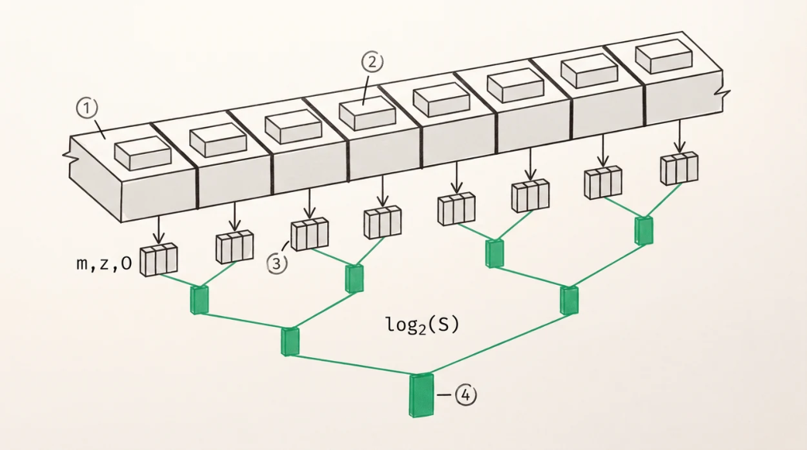

FlashDecoding and Split-KV
Why decode attention is different
In prefill, FlashAttention hands query blocks to workgroups, and with thousands of query rows there’s parallelism to spare. In decode there’s one query row per sequence per head, so on a 256-CU GPU serving a single sequence you get a handful of busy CUs, hundreds idle, and, worse than the idle silicon, nowhere near enough outstanding memory requests to saturate HBM.
Flash-Decoding (Dao, Haziza, Massa, and Sizov, 2023, and frequently miscited) fixes this by parallelising along the KV axis instead. The related FlashDecoding++ (Hong et al., 2023) attacks the same problem from a different angle, using a unified maximum value to avoid the rescaling step altogether.
Split-KV parallelism
Partition the KV cache into S chunks and hand each to a different workgroup. Each one loads the shared query vector, computes scores against its own chunk of K, and runs online softmax over that chunk to produce a partial (m, Z, O). Then the S partial results get combined with the merge formula from Chapter 9.
The number of splits is the main tuning parameter, and it cuts both ways. More splits mean more workgroups and more memory-level parallelism, up to the point where each workgroup has too little work to amortise its own startup and the combine step starts costing more than the split saves.

1There is only one query row in decode, so parallelising over queries gives one workgroup per head and leaves hundreds of compute units idle.2- Split the cache instead. Each chunk gets its own workgroup, which runs online softmax over its own slice.
3Each produces a partial triple, a running maximum, denominator and unnormalised output. These merge exactly and in any order, which is what makes the whole scheme correct.4The merge is a tree of depth log2(S), not a serial loop. Getting that wrong once cost 510 microseconds against 48 at a million tokens, and it dominated a split phase that was already fast.
The combine step
Each partial result is a triple (m_i, Z_i, O_i), merged as
m = max over i of m_i
Z = Σ e^(m_i − m)·Z_i
O = Σ e^(m_i − m)·O_i / ZA tree reduction over S partials has depth log₂(S) and total work O(S·d) . You will sometimes see the cost given as √S, which is wrong. The √S that does show up in real implementations is something else entirely, a two-pass reduction where the first pass uses about √S workgroups each merging about √S partials, chosen to balance parallelism against launch count.
Getting the combine right matters more than getting the split right, and the measurements make the point better than the argument does. At 1M context, a single-workgroup combine, one CU walking S partials serially, took about 510 µs and completely dominated a split phase costing a fraction of that. Restructuring it as a two-pass tree reduction brought the combine to about 48 µs and took the end-toend kernel from 859 to 3,419 GB/s. The lesson generalises to any split-combine kernel. Profile the combine first, because it’s the part that silently serialises.
Split-count heuristics
| SEQUENCE LENGTH | SPLITS | TOKENS PER SPLIT |
|---|---|---|
| ≤ 4,096 | 32 | ~128 |
| ≤ 32,768 | 256 | ~128 |
| ≤ 262,144 | 1,024 | ~256 |
| ≥ 1,048,576 | 2,048–4,096 | ~256–512 |
You want enough workgroups resident to saturate memory bandwidth while leaving each one enough tokens to fill its prefetch pipeline. Too few tokens per split and the workgroup spends its life ramping up, too many splits and the combine tree grows.
In a batched server the calculus shifts, because with B concurrent sequences there are already B × H_kv independent units of work, so the splits needed per sequence fall. A good implementation computes the split count from total resident workgroups rather than from sequence length alone.
Memory-level parallelism, or what actually gets you to the ceiling
Two structural properties dominate everything else here, and both took several rewrites to find.
Wide loads. Issue the widest load the ISA supports, 128-bit, half8 on AMD and float4 on NVIDIA. With 16 lanes cooperating per token, each lane issuing one 128-bit load, a single instruction moves 1 KB, where narrow loads waste both issue slots and cache-line efficiency.
Prefetch depth ahead of the reduction. This is the one that’s easy to get wrong and expensive to diagnose. A cross-lane reduction, a ds_bpermute butterfly or a warp shuffle, is a wavefront-wide synchronisation point, so a load issued immediately before one can’t overlap with anything. The wavefront stalls on it, in-flight loads cap at one, and the kernel becomes latency-bound no matter how high its occupancy climbs. Issuing eight tokens’ worth of wide loads before any reduction lifted mainarch’s split kernel to 4,796 GB/s, which is 60% of peak and 83% of the sustained ceiling.
The diagnostic that found this is worth stealing. Three structurally different rewrites of the split kernel, a narrow half2 version, an LDS-staged float4 version, and a 16-lane wide half8 version, all plateaued at exactly 229 GB/s. Identical plateaus across different code mean the bottleneck isn’t in the code, and in that instance it was a scratch buffer sitting in host memory (Chapter 6). Only after fixing that did the kernel differences become visible at all.
Chained dispatch
FlashDecoding needs two phases with a dependency between them, and done naively that’s two dispatches with a host wait in the middle, on every layer of every token.
With chained dispatch (Chapter 25), both packets go into the ring with the barrier bit set on the second, the host rings the doorbell once, and waits once. The GPU orders the phases itself, and for a 94-layer model that removes 94 host round-trips per token from the attention path alone.
This is the first place where owning the queue pays for itself, and it’s why the dispatch chapter comes before the kernel chapters in the build order.
Performance, measured against the ceiling
Concrete numbers from mainarch on one MI355X, decode attention for one KV head at 1M context with head dimension 128, so 512 MiB of FP16 KV read per layer per head. A full 4-KV-head layer is four times the work.
| CONFIGURATION | TIME | BANDWIDTH | % OF 8 TB/S PEAK | % OF 5,800 GB/S SUSTAINED |
|---|---|---|---|---|
| Initial working kernel | 39 ms | 13.5 GB/s | 0.2% | 0.2% |
| After combine parallelised | — | 859 GB/s | 10.7% | 15% |
| Split kernel alone | — | 4,796–5,092 GB/s | 60–64% | 83–88% |
| Full split + combine, FP16 KV | 157 µs | 3,419 GB/s | 42.7% | 59% |
| Full split + combine, FP8 KV | 107 µs | — | — | 1.47× vs FP16 |
Two honest observations about that table. The end-to-end number, 59% of sustained, sits well below the split kernel in isolation at 83 to 88%, and the difference is the combine phase plus the pipeline drain between phases, which is where the remaining work lives. And the FP8 result is reproduces the arithmetic of the FP16 path to a maximum relative error of 3.89e-7 against an f64 oracle fed the same dequantised keys and values, so that number bounds the kernel’s error and not the cost of quantisation, which this chapter puts at around 2% relative L2 for E4M3. It is 1.47× faster rather than the 2× the byte count suggests, because the combine and the query side don’t shrink.
The general method is worth stating plainly. Compute the theoretical floor as bytes divided by sustained bandwidth, measure the actual, and account for the difference with named mechanisms. “We’re at 59%” isn’t a finding. “We’re at 59%, of which 12 points are the combine tree and 20 are prefetch ramp-up in the first window” is a plan.
Key Concept
Decode attention is a memory problem. FlashDecoding parallelises along the KV axis and merges partial softmax results, and the combine is a log-depth tree reduction, not √S and certainly not a serial loop, which is the mistake that costs an order of magnitude. Reaching the bandwidth ceiling needs wide loads and, more importantly, enough prefetch depth ahead of every cross-lane reduction that loads actually overlap. Identical performance plateaus across different implementations mean the bottleneck is outside the kernel.
Exercises
At 1M context with one KV head of dimension 128 in FP8, compute the bytes read and the floor time at 5,800 GB/s. Compare with the measured 107 µs above and account for the difference. Then scale to all four KV heads and state the per-layer figure.
Derive the depth and total work of a tree reduction over S partials, and explain when a two-pass √S-wide reduction beats a log₂(S)-deep binary one on real hardware.
Your split kernel achieves 85% of sustained bandwidth in isolation but the full attention operation achieves 55%. Enumerate the possible causes and design an experiment for each.
Build: implement split-KV decode attention, sweep split count and prefetch depth on a 2-D grid, and plot achieved bandwidth. Find where increasing splits starts to hurt and explain why.